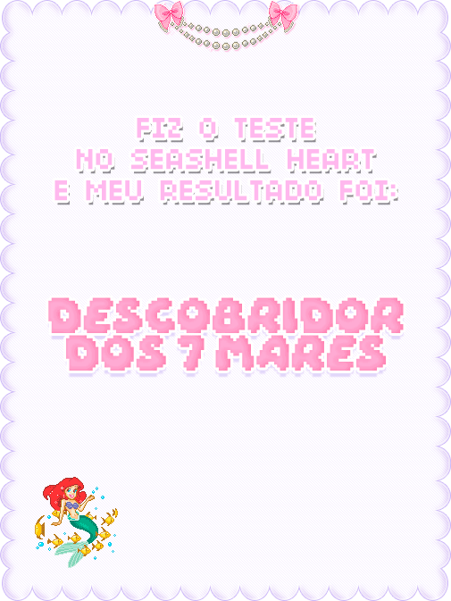
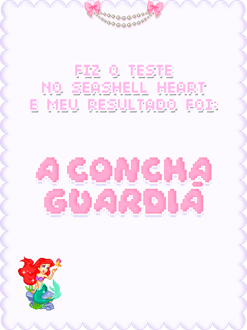
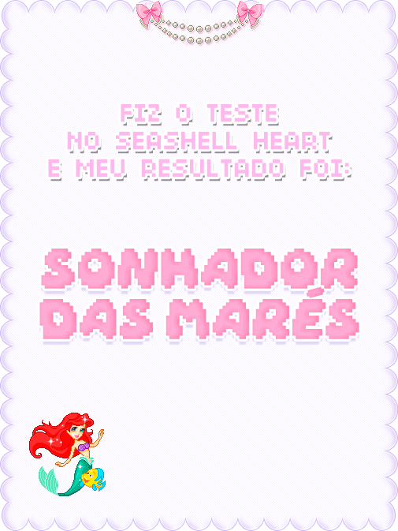

SEUS RESULTADOS

DESCOBRIDOR DOS 7 MARES
Você é destemido como as ondas do mar, sempre disposto a mergulhar de cabeça no desconhecido. O perigo e a
incerteza não te intimidam, eles são o combustível para sua curiosidade e coragem. Cada
escolha é uma nova oportunidade para descobrir segredos e desafiar limites. Como um verdadeiro explorador dos
mares, você sabe que as maiores recompensas vêm dos maiores riscos.

A CONCHA GUARDIÃ
Você valoriza a segurança e a sabedoria, protegendo-se como uma concha guarda sua pérola. Cada passo é
cuidadosamente considerado, e você sabe que a paciência e a observação são virtudes poderosas. Prefere preservar
o que é precioso e evitar perigos desnecessários, confiando em sua intuição e respeito pelos mistérios do
oceano.

SONHADOR DAS MARÉS
Você navega com equilíbrio entre coragem e cautela, como alguém que compreende os ciclos das marés. Sabe quando
arriscar para avançar e quando recuar para proteger o que importa. Esse equilíbrio faz de você uma pessoa
estrategista, capaz de encontrar soluções criativas e alcançar seus objetivos, respeitando o ritmo do oceano e
da
vida.